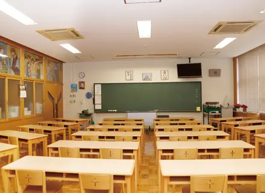


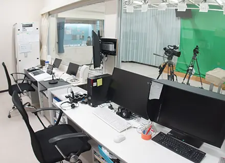


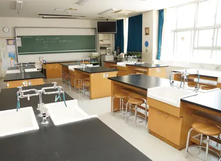
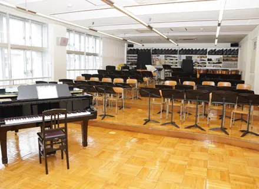
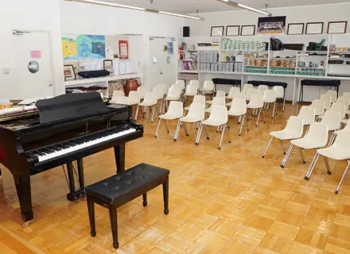
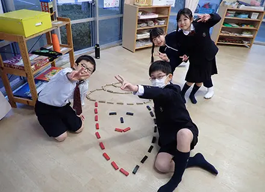

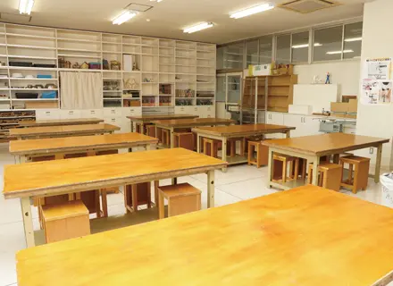
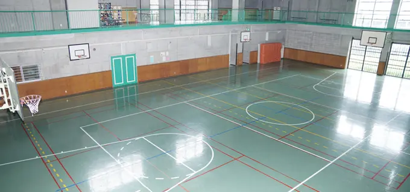
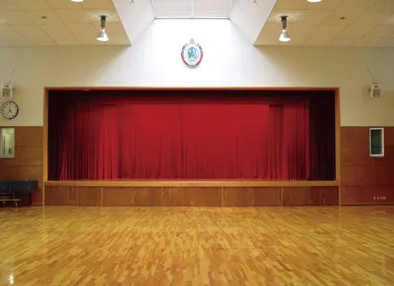
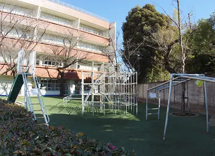

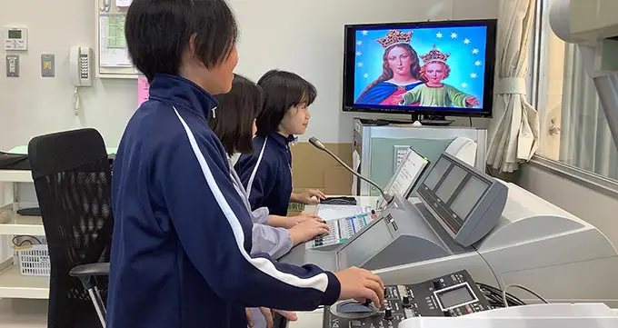
子どもたちが発信する学内放送
星美の放送設備は音声だけでなく、映像配信もできる最新の設備を整えています。
放送委員が中心となって、朝会や各種案内などを全教室にあるテレビモニターを通して学内へ配信します。
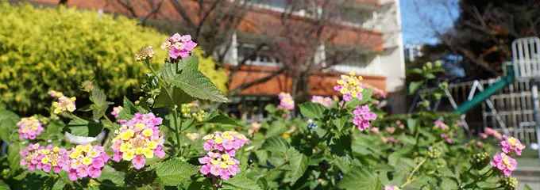
緑豊かな落ち着いた学園
本校のある星美学園キャンパスは赤羽の高台にあり、季節ごとに豊かな表情を見せる木々や草花に囲まれています。
学習に集中できる環境のほか、キャンパス内の種類豊かな植物たちが自然の教材となっています。

校庭、運動施設の充実
星美は都内にありながら広い校庭があり、体育の授業や休み時間には子どもたちが伸び伸びと駆け回る風景を見ることができます。
その他、体育館、プール、多目的ホールなど子どもたちの教育に必要な教育設備を完備しています。